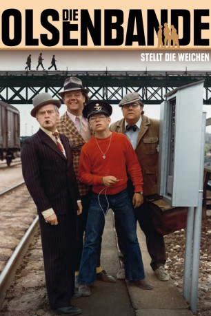

#5405 Olsenbande 07 - Die Olsenbande stellt die Weichen
 
 IMDB-Wertung: 7.2 / 10
IMDB-Wertung: 7.2 / 10  Metascore: 0
Metascore: 0 
Gibt es ein Unternehmen wo alles glatt geht, der Beruf Freude macht? Ja, Stellwerkswärter bei der Dänischen Staatsbahn! Zumindest so lange, bis die Olsenbande die Weichen stellt, um die erbeuteten Goldbarren an den Mann bzw. die Firma zu bringen. Wie immer geht einiges schief, aber die Kollegen von Polizei und Dänischer Staatsbahn bringen das schon wieder in Ordnung. Mit diesem Film wird jeder Eisenbahnfreund zum Olsenbandenfan.
Jahr: 1975
Dauer: 100 Minuten
FSK: 12
Land: Dänemark Studio: Icestorm EntertainmentTonspuren:
Untertitel:
Auflösung: 1080p (1808x1080) Größe: 6195 MB
Genre: Komödie, Krimi
Regisseur: Erik Balling
Drehbuch: Martin Gies
Soundtrack:
Darsteller:
Datei: X:\7+mehr(A-Z)\Olsenbande\Olsenbande 07 - Die Olsenbande stellt die Weichen (1975, FSK12, 1808x1080).mkv seit 30.01.2017
Festplatte: HD Collection-7+mehr(A-Z)+Person
 Es gibt insgesamt 17 Filme in der Gruppe '7+mehr(A-Z)\Olsenbande'
Es gibt insgesamt 17 Filme in der Gruppe '7+mehr(A-Z)\Olsenbande'